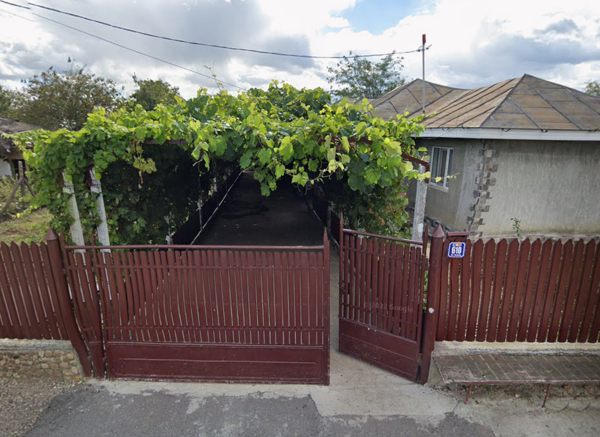

Mihai Caradan and the location


The place where he commited suicide
Edited photo of Mihai Caradan in front of he s house,wearing the shirt that he wore on the attack
Killed by UMP-45: 2 Killed by GALI-AR: 14 Injured by the fire caused by the explosions(blown up the reactor) 1 Milion aproximately(unconfirmed) 820-890(confirmed)